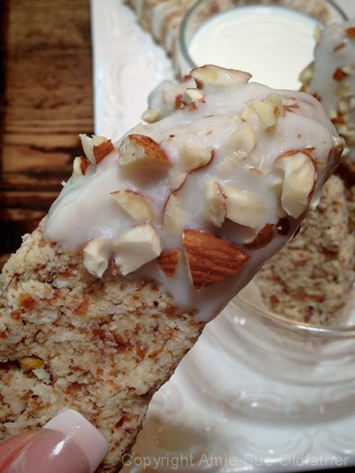
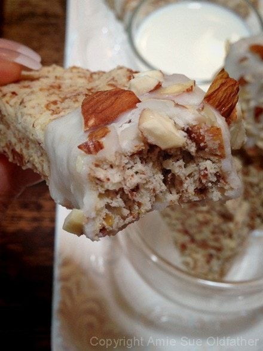
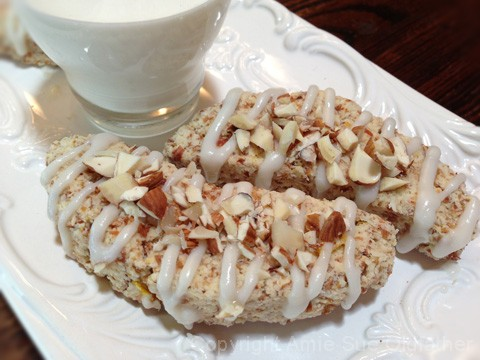

Coconut Cream and Tart Lemon Biscotti
Coconut Cream and Tart Lemon Biscotti

~ raw, vegan, gluten-free ~
I’ve only had biscotti once in my life. I didn’t grow up around this delicate coffeehouse treat, and by the time I discovered it, I had already gone gluten-free. So, needless to say, biscotti has always been one of those foods I admired from afar—kind of like window shopping, but with baked goods.
Biscotti just feels like part of that cozy café culture, doesn’t it? And since Bob and I have a morning ritual—snuggled up on the couch with variations of coffee drinks—I thought he might enjoy a little biscotti with his espresso. You know… something to clink against the mug before dunking.
For the base, I used almond pulp, which gives this treat the perfect balance of texture and crunch. You can use ground nuts if that’s what you have on hand, but fair warning—the end result will be noticeably different. Almond pulp gives it that light, crisp edge we’re going for here.
Traditionally, biscotti (a.k.a. “coffee bread”) is twice-baked. The dough is shaped into a loaf, baked once, then sliced while still warm and baked again to get that dry, crunchy finish. In my raw-friendly version, I stayed true to the twice-baked (or rather, twice-dried) process. I started with a dehydration at 145°F to set the crust, then lowered the temp to 115°F until the texture was just right.
And let me tell you—the coconut butter glaze took this biscotti over the top. It added just the right amount of sweetness without overshadowing the delicate hints of coconut and lemon. Simple, elegant, and so satisfying. Enjoy! blessings, amie sue
Ingredients:
Biscotti:
- 2 cups raw almonds, soaked
- 4 cups packed, moist almond pulp
- 14 oz thick fresh coconut milk or canned
- 1 cup shredded coconut
- 1/3 cup maple syrup
- zest of 1 lemon
- 3 Tbsp lemon juice
- 1 tsp lemon extract
- 1 tsp Himalayan pink salt
- 1/2 cup flax seeds, ground
Coconut Cream Glaze:
Preparation:
Biscotti:
- After soaking the almonds, drain and rinse them. Place in the food processor, fitted with the “S” blade, and process to a small crumble. Place in a large bowl.
- Add the almond pulp, coconut milk, shredded coconut, maple syrup, lemon zest and juice, lemon extract, and salt. Mix well.
- Add ground flax seeds and mix with your hands, working everything in the dough together. Let it sit for 30 minutes.
- Shape the batter into a long log on the teflex sheet that comes with the dehydrator. Dehydrate at 145 degrees for 1 hour to create an outer crust.
- Remove and slice diagonally. Shape into smiling moons (biscotti shape) and place on the mesh sheet that comes with the dehydrator.
- Dry at 145 degrees for 1 hour, then reduce to 115 degrees for 10+ hours or until thoroughly dry. Once cooled, it is time to apply the coconut cream glaze.
Coconut Cream Glaze:
- Soften the coconut butter by placing the jar in a large bowl. Surround the jar with hot water and wait 15+ minutes.
- Below I show you two ways that I decorated the biscotti.
- The first way, I put the softened coconut butter into a disposable piping bag and zigzagged the glaze over the top. I then sprinkled the crushed almonds on the tip.
- The other way of decorating it is by brushing all of the crumbs off of the biscotti and then dip 1/4-1/2 of the biscotti into the coconut cream, lift out and let the excess drip off. Sprinkle crushed almonds on the glaze and place them in the freezer to firm up.
- Keep stored in an airtight container for 3-5 days in the fridge.
The Institute of Culinary Ingredients™
- To learn more about maple syrup by clicking (here).
- What is Himalayan pink salt, and does it matter? Click (here) to read more about it.
- Is coconut butter the same as coconut oil? Click (here) to find out.
- Learn how to grind your own flaxseeds for ultimate freshness and nutrition. Click (here).
Culinary Explanations:
- Why do I start the dehydrator at 145 degrees (F)? Click (here) to learn the reason behind this.
- When working with fresh ingredients, it is essential to taste test as you build a recipe. Learn why (here).
- Don’t own a dehydrator? Learn how to use your oven (here). I do, however honestly believe that it is a worthwhile investment. Click (here) to learn what I use.



© AmieSue.com